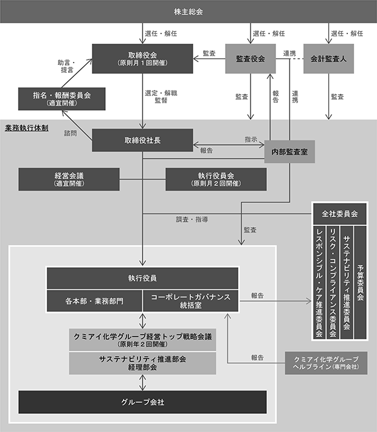

該当事項はありません。
該当事項はありません。
③ 【その他の新株予約権等の状況】
該当事項はありません。
該当事項はありません。
（注）2017年５月１日の旧イハラケミカル工業株式会社との経営統合により、旧イハラケミカル工業株式会社の普通株式１株に対し当社の普通株式1.57株を割当交付しております。これにより、発行済株式総数は46,206,903株増加し133,184,612株となっております。また、資本金・資本準備金に増減はありませんが、資本剰余金が増加しております。
2023年10月31日現在
(注) 自己株式12,860,015株は「個人その他」の欄に128,600単元及び「単元未満株式の状況」の欄に15株含めて記載しております。なお、自己株式12,860,015株は、株主名簿記載上の株式数であり、2023年10月31日現在の実保有残高は12,859,015株であります。
2023年10月31日現在
(注)１． 当社は自己株式12,859,015株を保有しておりますが、上記の大株主から除いております。
２． 信託銀行等の信託業務に係る株式数については、当社として網羅的に把握することができないため、株主名簿上の名義で所有株式数を記載しております。
2023年10月31日現在
(注)「単元未満株式」には、当社所有の自己株式15株が含まれております。
2023年10月31日現在
(注) 株主名簿上は当社名義となっておりますが、実質的に所有していない株式が1,000株(議決権10個)あります。
なお、当該株式数は上記「発行済株式」の「完全議決権株式(その他)」の中に含まれております。
該当事項はありません。
該当事項はありません。
(注)１．当事業年度における取得自己株式は、譲渡制限付株式の無償取得及び単元未満株式の買取によるものです。
２．当期間における取得自己株式には、2024年１月１日から有価証券報告書提出日までの譲渡制限付株式の無償取得及び単元未満株式の買取りによる株式数は含めておりません。
（注）１．当事業年度の内訳は、取締役等の譲渡制限付株式報酬、従業員持株会向け譲渡制限付株式インセンティブとしての自己株式の処分及び単元未満株式の売渡であります。当期間における処理自己株式には、2024年１月１日から有価証券報告書提出日までの単元未満株式の売渡による株式数は含めておりません。
２．当期間における保有自己株式数には、2024年１月１日から有価証券報告書提出日までの譲渡制限付株式の無償取得及び単元未満株式の買取及び売渡による株式数は含めておりません。
当社の配当政策は、収益動向を踏まえた株主の皆様への還元及び企業体質の強化と将来の事業展開に備えるための内部留保等を総合的に勘案しつつ、安定して剰余金の配当を継続して行うことを基本方針としております。
この剰余金の配当の決定機関は、期末配当については株主総会、中間配当については取締役会であります。
また、当社は取締役会の決議によって、毎年４月30日を基準日として中間配当が出来る旨を定款で定めております。
当期における配当金につきましては、上記方針に基づき、１株当たり27円の配当を実施いたしました。
なお、中間期に１株につき18円の配当を実施しているため、年間の配当金は１株当たり45円となります。
この結果、連結での配当性向は30.0％となりました。
内部留保は、新規製品の開発のための研究開発投資や設備投資に充当することとしております。
今後も業績の一層の向上に努めるとともに、引き続き経営の効率化を進め、収益体質の改善に取り組んでまいります。
なお、当事業年度に係る剰余金の配当は以下のとおりであります。
『私たちは創造する科学を通じて「いのちと自然を守り育てる」ことをメインテーマとし、安全・安心で豊かな社会の実現に貢献します』という企業理念の下、顧客のニーズと信頼にこたえる製品の開発・提供に努めております。
当社グループは経営環境の変化に迅速に対応できる体制を構築するとともに、株主重視の観点で法令・倫理の遵守及び経営の透明性を高めるために、経営管理体制の充実を図っていくことが重要な課題と位置づけております。
利害関係者との関係につきましては、当社の経営ビジョンの一つに「常に透明性ある企業活動を通じ、全てのステークホルダーとの調和を図る」を掲げるとともに、行動規範において、「クミカの従業員としての誠実と誇り」、「顧客・取引先とのTotal Win」、「株主との相互コミュニケーション」、の中で私たち一人ひとりが取るべき行動や遵守すべき事項を提示し、利害関係者の立場を尊重する企業風土の醸成を図るよう努めております。
② 企業統治の体制の概要及び当該体制を採用する理由
1）企業統治の体制の概要
当社は企業統治の体制として、監査役会設置会社を採用しております。
当社は、「取締役会」、「経営会議」及び「執行役員会」を設置しており、それぞれの決定や協議に基づき企業統治を行う体制を採っております。「取締役会」の役割を経営方針の決定及び業務執行の監督に集中させることにより、経営機能と業務執行の責任区分を明確にし、業務執行機能の拡充と意思決定の迅速性を高めるよう運営されております。
当社は、常勤監査役(社外監査役・独立役員)が「取締役会」、「経営会議」及び「執行役員会」に加えて社内のその他重要会議に出席し、業務執行に対する監査機能強化を図っており、また、「取締役会」、「経営会議」及び「執行役員会」は、社内の規程により各々の意思決定の基準を定めてその範囲で運営され、その決定に基づき業務執行がなされている等、経営チェック機能を十分発揮している体制であると判断しております。
a．取締役会
取締役会は、代表取締役社長高木 誠を議長とし、打土井利春、吉村 巧、大川哲生、井川照彦、横山 優、西尾忠久（社外取締役）、池田寛二（社外取締役）、山梨智里（社外取締役）の取締役９名（内３名が社外取締役）で構成され、原則月１回開催し、経営方針の決定、経営上の重要な決定及び業務執行の監督を行っております。取締役会には、経営のチェック機能を強化する観点から種田宏平（社外監査役）、山田正和（社外監査役）、助川龍二（社外監査役）、白鳥三和子（社外監査役）の監査役４名も出席し、必要に応じて意見陳述を行っております。
個々の取締役の取締役会への出席状況は次のとおりです。
なお、期中に退任された前代表取締役会長の小池好智、前取締役常務執行役員の高橋 一、前独立社外取締役の伊田黎之輔は退任までに開催された取締役会２回全てに出席しております。
取締役会における具体的な検討内容として、決算、株主総会付議事項、国内企業の買収、プライバシーポリシーの改定、中期経営計画の方針設定、サステナビリティ経営の進捗、内部統制システムに関する基本方針の改定等があります。
b．指名・報酬委員会
指名・報酬委員会は、取締役会の下に置かれ、代表取締役社長高木 誠を委員長とし、取締役専務執行役員吉村 巧、西尾忠久（社外取締役）、池田寛二（社外取締役）、山梨智里（社外取締役）の５名で構成され、必要の都度開催し、取締役の指名並びに取締役の報酬等に係る取締役会の機能の独立性、客観性及び説明責任を強化しております。当事業年度の指名・報酬委員会は２回開催されました。
個々の委員の指名・報酬委員会への出席状況は次のとおりです。
なお、期中に委員の変更があり、委員の吉村 巧及び山梨智里を選任しました。変更前の委員の小池好智は委員在任中に開催された指名・報酬委員会２回全てに出席、伊田黎之輔は委員在任中に開催された指名・報酬委員会２回のうち１回に出席しております。
指名・報酬委員会における具体的な検討内容として、前事業年度の業績を主な指標として、取締役会に諮る取締役の報酬改定に関わる議案内容に係る協議、また、取締役候補について、その経歴や資質に関する情報をもとに取締役会に諮る議案内容に係る協議等があります。
c．経営会議
経営会議は、代表取締役社長高木 誠を議長とし、高木 誠のほか、打土井利春、吉村 巧、大川哲生、井川照彦、横山 優の常勤の取締役５名及び漆畑育巳、岩田浩一、新川一也の取締役を兼務しない役付執行役員３名で構成され、必要の都度開催し、重要な経営戦略及び業務執行に関して協議を行っております。また、常勤監査役の種田宏平、相談役の小池好智も出席しております。
d．執行役員会
執行役員会は、代表取締役社長高木 誠を議長とし、高木 誠のほか、打土井利春、吉村 巧、大川哲生、井川照彦、横山 優の常勤の取締役５名及び漆畑育巳、岩田浩一、新川一也、片桐定光、井上 淳、池内利祐、中野勇樹、矢野祐幸、小長井泉志、川島隆弘の執行役員10名で構成され、原則月２回開催し、業務執行の意思決定を行っております。また、常勤監査役の種田宏平、オブザーバーとして相談役小池好智、株式会社理研グリーン社長篠原卓朗、ケイ・アイ化成株式会社社長柴田卓、K-I CHEMICAL U.S.A. INC.社長山地充洋も出席しております。
e．監査役会
監査役会は、常勤監査役種田宏平を議長とし、山田正和、助川龍二、白鳥三和子の監査役４名（うち４名が社外監査役）で構成され、監査役会が定めた監査方針及び監査計画に基づき、独立した立場から取締役の職務執行の監査を行っております。
その他に、コーポレートガバナンス体制を担う「予算委員会」、「サステナビリティ推進委員会」、「リスク・コンプライアンス委員会」、「レスポンシブル・ケア推進委員会」（いずれも代表取締役社長高木 誠を議長とし、高木 誠のほか、打土井利春、吉村 巧、大川哲生、井川照彦、横山 優の常勤の取締役５名、漆畑育巳、岩田浩一、新川一也、片桐定光、井上 淳、池内利祐、中野勇樹、矢野祐幸、小長井泉志、川島隆弘の執行役員10名、相談役の小池好智及び部室長10名で構成）を年１回以上及び必要な都度開催するとともに、「クミアイ化学グループ経営トップ戦略会議」（代表取締役社長高木 誠を議長とし、高木 誠のほか、打土井利春、吉村 巧、大川哲生、井川照彦、横山 優の常勤の取締役５名及び担当執行役員２名と、相談役の小池好智、グループ会社の社長及び管理担当取締役17名で構成）を年２回開催しております。いずれにつきましても、常勤監査役の種田宏平が出席しております。
また、内部監査室が独立的な立場から、法令の遵守状況及び業務活動の効率性等について内部監査を実施し、業務改善に向けた具体的な助言等を行っております。

2）当該体制を採用する理由
常勤監査役(社外監査役・独立役員)が、「取締役会」、「経営会議」及び「執行役員会」に加えて社内のその他重要会議に出席し、業務執行に対する監査機能強化を図っており、内部監査室が独立的立場で組織や業務を含めた企業活動の実態と課題を内部監査しております。また、「取締役会」、「経営会議」及び「執行役員会」は、社内の規程により各々の意思決定の基準を定めてその範囲で運営され、その決定に基づき業務執行がなされている等、経営チェック機能を十分発揮している体制であると当社は判断しております。
③ 企業統治に関するその他の事項
1）内部統制システムの整備の状況
当社では、2022年12月14日の「取締役会」で改定決議した下記の「業務の適正を確保するための体制（内部統制システム）に関する基本方針」の整備に基づき、適正に運用するための水準を示した「内部統制システム運用管理規則」に則り、適切な運用に努めております。
当社は、「企業理念」や「クミアイ化学グループサステナビリティ基本方針」を踏まえて、サステナビリティ経営の実践を掲げ、その実現のために、経営環境の変化に迅速に対応できる体制を構築するとともに、法令・倫理の遵守及び経営の透明性をより高めるために、当社及び子会社から成る企業集団における経営管理体制の整備・充実を図っていくことが重要な課題と認識しております。
a．取締役及び使用人の職務の執行が法令及び定款に適合することを確保するための体制
(a)「クミアイ化学行動規範」、「クミアイ化学行動基準」、「クミアイ化学倫理基準」及び「コンプライアンス規程」を定め、役職員に対して企業倫理・法令遵守の徹底を図る。
(b)「サステナビリティ基本方針」のもと「サステナビリティ推進委員会」を設置し、その下に委員会を補完する「環境部会」、「社会部会」、「ガバナンス部会」を置く。
(c)コンプライアンスを統括する部署としてコーポレートガバナンス統括室を設置する。「リスク・コンプライアンス委員会」はコンプライアンスに関する重要な事項を審議し、コーポレートガバナンス統括室はコンプライアンス体制の実効性を高めるために役職員のコンプライアンス教育・啓発を継続的に実施し、コンプライアンス体制の整備、充実を図る。
(d)内部通報制度として、コーポレートガバナンス統括室ライン、クミアイ化学グループ社外相談窓口を構築し、「内部通報制度運用細則」に基づき運用する。
(e)社会の秩序や安全に脅威を与える反社会的勢力に対しては、一切の関係を遮断し、あらゆる手段を講じて反社会的勢力の排除に向けて対応する。
(f)「財務報告に係る内部統制の基本方針」を定めて、コーポレートガバナンス統括室が、クミアイ化学グループ各社の財務報告に係る内部統制の有効かつ効率的な整備・運用の評価を行い、内部監査室が、業務部門から独立して、その評価の有効性及び適正性を確認する。
b．取締役の職務の執行に係る情報の保存及び管理に関する体制
(a)「文書管理規程」、「機密情報管理細則」を定め、文書の重要性により保存年限、保管・保存の責任部署等を明確にし、取締役及び執行役員の業務執行に必要な文書又は電磁情報の保管・保存を行う。
(b)いずれの文書も取締役及び監査役から閲覧要請があった場合は、即時対応する。
(c)情報セキュリティ基本方針を定め、「情報セキュリティ運用管理規程」と諸規則・細則からなる規程体系を整備し、これに則した活動を行う。情報セキュリティ統括責任者をトップとする情報セキュリティ運用管理体制を構築するとともに、本関連活動内容を審議する「情報セキュリティ会議」を設置する。
c．損失の危険の管理に関する規程その他の体制
(a)平時の対応は、「リスク管理規則」に基づき、コーポレートガバナンス統括室がリスク管理を統括・推進するとともに、「リスク・コンプライアンス委員会」で事業等のリスクの定期的な見直しやリスク情報の集約及び共有化を図る。
(b)重大なリスクが発生した際は、「経営リスク管理規程」に基づき、「リスク対策本部」を設置して対応する。
(c)建物あるいは設備の機能を損なう地震、火災及び事故等の災害の発生時並びにパンデミック等発生時には、事業の継続及び早期の復旧を図るため「事業継続計画（BCP）」に基づき適切に対応する。
(d)「レスポンシブル・ケア推進委員会」を設置し、環境、健康、安全及び品質上のリスクに対処する。
(e)コーポレートガバナンス統括室は、役職員に対してリスク管理に関する教育を行い、リスク軽減に取り組む。
(f)内部監査室は、独立的な立場から、当社並びにクミアイ化学グループのリスク管理及びコンプライアンスを含む内部統制が的確に整備され、有効に運用されているかどうかを「内部監査規程」に基づき監査する。
d．取締役の職務の執行が効率的に行われることを確保するための体制
(a)「取締役会」は、経営方針及び経営上の重要な事項の決定並びに業務執行の監督を行う。「取締役会」に次ぐ重要な機関として「経営会議」及び「執行役員会」を設置する。
(b)「経営会議」は、経営戦略及び業務執行に係る重要事項について協議をする。
(c)「執行役員会」は、迅速かつ機動的な経営戦略決定を行うとともに、事業部門間における連携の強化並びに事業部門目標の徹底及びその完遂を図るため、事業の戦略や戦術等の実務的な面から、日常的な業務執行に関する事項について決定をする。
(d)「業務分掌規程」及び「部門別決裁基準明細書」等の社内規程に基づき、職務執行の範囲及び責任権限を明確にする。
(e)「取締役会」の下に「指名・報酬委員会」を設置し、取締役の指名及び報酬等の決定プロセスの公正性、透明性及び客観性を確保する。
e．当社及びその子会社から成る企業集団における業務の適正を確保するための体制
(a)「クミアイ化学グループ企業基本理念/行動指針」及び「クミアイ化学グループ行動憲章」に基づき、グループ全体のコンプライアンス推進活動を実践し、企業倫理・法令遵守意識をクミアイ化学グループ全体へ浸透させ、統制活動の醸成に努める。
(b)グループとして総合的な事業の発展を図るため、「関係会社管理規程」等において、クミアイ化学グループに関する管理上の基本事項を定め、業務の円滑化と適正な管理を行う。
(c)「クミアイ化学グループ経営トップ戦略会議」を設置し、グループ経営方針及び基本戦略を共有するとともに、クミアイ化学グループ各社の経営計画、経営状況及び事業実績等を確認することにより、グループ全体の統括・管理を行い、グループの経営基盤の強化を図る。
(d)内部監査室は、クミアイ化学グループの業務全般に関する監査を実施し、検討及び助言を行う。
(e)監査役は、「クミアイ化学グループ監査役等研究会」を設け、クミアイ化学グループ各社の監査役等と情報共有及び意見交換を行うことができるものとする。
(f)クミアイ化学グループには原則として取締役又は監査役を派遣し、当社の意思を経営に反映させるものとする。
(g)所管部門は、「関係会社管理規程」に基づき子会社から事業状況等に関する定期的な報告を受けるとともに、重要事項について事前協議する。
(h)クミアイ化学グループは、グループ内取引を行う際、当該取引の必要性及びその条件が、第三者との通常取引条件と著しく相違しないことを十分に確認する。
f．監査役がその職務を補助すべき使用人を置くことを求めた場合における当該使用人に関する事項並びにその使用人の取締役からの独立性に関する事項及びその使用人に対する監査役の指示の実効性の確保に関する事項
(a)内部監査室は、監査役のスタッフとなり、監査役の職務を補助する。当該職務を遂行する際は、監査役の指揮に従うものとする。
(b)内部監査室の異動等については、監査役の意見を尊重する。
g．取締役及び使用人が監査役に報告をするための体制その他の監査役への報告に関する体制
(a)次に掲げる監査役への報告に関する体制を整備し、「監査役への報告体制規則」に基づき運用する。
・クミアイ化学グループの役職員が当社の監査役に報告するための体制
・クミアイ化学グループの役職員から報告を受けた者が当社の監査役に報告するための体制
(b)監査役は、「取締役会」、「経営会議」及び「執行役員会」のほか、重要な各種会議・委員会に出席し、必要があると認めるときは、意見を述べることができるものとするとともに、主要な稟議書その他業務執行に関する重要な書類を閲覧できるものとする。
(c)内部監査室は、監査役と常時、情報の交換を行うほか、内部監査資料を提供する。
(d)コーポレートガバナンス統括室は、受理した内部通報を「監査役への報告体制規則」に基づき監査役へ報告する。
(e)当社の監査役に報告及び通報をした者は、当該報告等をしたことを理由として不利な取扱いを受けないものとする。
h．その他監査役の監査が実効的に行われることを確保するための体制
(a)代表取締役と監査役は、定期的な意見交換を行う。
(b)会計監査人、社外取締役及び監査役は、緊密な連携を保てるように、積極的に意見及び情報の交換を行う。
(c)監査役の職務に係る費用については、監査役の請求に基づき会社が負担する。
2）リスク管理体制の整備状況
当社は、「クミアイ化学行動規範」を定めてコンプライアンス基盤の強化に努めるとともに、行動規範に則る行動を実現するために、法令、社内規程、各種ガイドライン等に基づき、守るべき事項をまとめた「クミアイ化学行動基準」と、役職員として良識ある行動を行うために守ることが望ましいことを具体的にまとめた「クミアイ化学倫理基準」を定めております。また、「コンプライアンス規程」に基づき、「リスク・コンプライアンス委員会」においてコンプライアンスに関わる事項の審議を行うとともに、「内部通報制度運用細則」に基づき、クミアイ化学グループヘルプライン窓口を運用しております。
当社は、平時のリスク対応としては、「リスク管理規則」に基づき、「リスク・コンプライアンス委員会」において、全社的又は組織横断的なリスク及び部署別リスクの洗い出しと対応策を取り纏めるとともに、各部署のリスク情報を集約して、共有化を図っています。また、重大なリスクの発生等有事の対応は、「経営リスク管理規程」に基づき、「リスク対策本部」が設置され、対策の決定や対外的な対応等を行う体制になっております。
3）子会社の業務の適正を確保するための体制整備の状況
当社は、当社及びその子会社から成る企業集団の業務の適正を確保するため、「関係会社管理規程」等により、クミアイ化学グループに関する管理上の基本事項を定め、所管部門がクミアイ化学グループの役職員から適時報告を受ける体制を整備しております。また、主要なグループ会社に対して「グループ企業の内部統制システムの整備・運用のためのガイドライン」の遵守を求めているほか、会社の規模に関わらず各社が「業務の適正を確保するための体制（内部統制システム）に関する基本方針」を定めております。
4）取締役の員数
当社の取締役は９名以内とする旨を定款に定めております。
5）株主総会決議事項を取締役会で決議することができる事項
a．自己株式取得
当社は、自己株式の取得について、経営環境の変化に対応し、機動的な資本政策に応じた経営を行うことを可能とするため、会社法第165条第２項の規定に基づき、取締役会の決議によって市場取引等により自己の株式を取得することができる旨を定款で定めております。
b．中間配当
当社は、取締役会の決議によって、毎年４月30日を基準日として中間配当をすることができる旨を定款に定めております。これは、株主への機動的な利益還元を可能とするためであります。
6）取締役及び監査役の責任免除
当社は、取締役及び監査役が職務の遂行にあたり期待される役割を十分に発揮できるようにするため、会社法第426条第１項の規定により、任務を怠ったことによる取締役（取締役であった者を含む。）及び監査役（監査役であった者を含む。）の損害賠償責任を、法令の限度において、取締役会の決議によって免除することができる旨を定款に定めております。
7）責任限定契約の内容の概要
当社は、会社法第427条第１項の規定により、取締役（業務執行取締役等であるものを除く）及び監査役との間に、会社法第423条第１項の損害賠償責任を限定する契約を締結できることとし、当該契約に基づく損害賠償責任の限度額は、法令が規定する額まで限定する旨を定款で定めております。これは、有用な人材を取締役及び監査役に迎えることができるようにすることと、それぞれの責任を合理的な範囲に止め、その期待される役割を十分に果たし得るようにすることを目的とするものであります。
8）役員等賠償責任保険契約の概要
当社は、会社法第430条の３第１項に規定する役員等賠償責任保険契約を保険会社との間で締結しております。当該保険契約の被保険者は、当社及び当社子会社の取締役及び監査役であり、被保険者の全ての保険料を当社が負担しております。
被保険者が業務遂行に起因して損害賠償請求がなされたことによって被る法律上の損害賠償金及び争訟費用は、当該保険契約により補填することとしております。当該保険契約には、被保険者の違法な私的利益供与、インサイダー取引、犯罪行為等による賠償責任は補填の対象とされない旨の免責事項が付されています。
9）取締役の選任及び解任の決議要件
当社は、取締役の選任決議について、議決権を行使することができる株主の議決権の３分の１以上を有する株主が出席し、その議決権の過半数をもって決定する旨、但し、その決議は累積投票によらない旨を定款に定めております。また、取締役の解任決議について、議決権を行使することができる株主の議決権の過半数を有する株主が出席し、その出席した株主の議決権の３分の２以上に当る多数をもって行う旨を定款に定めております。
10）株主総会の特別決議
当社は、株主総会の特別決議事項の審議を円滑に行うことを目的として、会社法第309条第２項に定める特別決議について、議決権を行使することができる株主の議決権の３分の１以上を有する株主が出席し、その出席した株主の議決権の３分の２以上に当る多数をもって行う旨を定款に定めております。
①役員一覧
男性
(注) １ 取締役西尾忠久氏、池田寛二氏及び山梨智里氏は社外取締役であります。
２ 監査役種田宏平氏、山田正和氏、助川龍二氏及び白鳥三和子氏は社外監査役であります。
３ 取締役の任期は、2025年１月開催予定の定時株主総会の終結の時までであります。
４ 監査役の任期は、2028年１月開催予定の定時株主総会の終結の時までであります。
５ 当社は、法令に定める監査役の員数を欠くことになる場合に備え、会社法第329条第３項に定める補欠監査役１名を選任しております。補欠監査役の略歴等は次のとおりであります。
(注) 補欠監査役の任期は、就任した時から退任した監査役の任期の満了の時までであります。
当社の社外取締役は３名、社外監査役は４名です。
社外取締役の西尾忠久氏は企業経営者として長年培われた経験と幅広い見識を活かし、当社の経営体制をさらに強化できることに加え、外部の視点から助言をいただくことにより、コーポレートガバナンスの一層の強化を図るため選任しております。なお、同氏の兼職先である鈴与株式会社は、当社製品等の輸出及び港湾業務等の委託の取引関係がありますが、当社と鈴与株式会社の取引額は、当社売上全体の１％未満であります。
社外取締役の池田寛二氏は大学教授として世界の農業に関わる環境社会学研究を通じて長年培われた経験と高い学識を活かし、当社の経営体制をさらに強化できることに加え、外部の視点から助言をいただくことにより、コーポレートガバナンスの一層の強化を図るため選任しております。なお、当社との特別の利害関係はありません。
社外取締役の山梨智里氏は静岡シェル石油販売株式会社における企業経営者としての経験と幅広い見識を活かし、当社の経営体制をさらに強化できることに加え、外部の視点から助言をいただくことにより、コーポレートガバナンスの一層の強化を図るため選任しております。なお、当社との特別の利害関係はありません。
また、西尾忠久氏、池田寛二氏及び山梨智里氏を東京証券取引所の上場規程に基づく独立役員として指定しております。
常勤監査役（社外監査役）の種田宏平氏は、金融機関において長年培われた豊富な経験と幅広い見識及び農林中金ファシリティーズ株式会社における企業経営者としての長年の経験と幅広い見識を有しております。また、財務及び会計に関する相当程度の知見を有していることに加え、外部の視点から当社の経営に対する監査等をいただくことにより、コーポレートガバナンスの一層の強化を図るため選任しております。なお、当社との特別の利害関係はありません。
社外監査役の山田正和氏は、当社筆頭株主であり当社主要取引先である全国農業協同組合連合会の耕種総合対策部長であります。同氏は全国農業協同組合連合会での長年の経験と幅広い見識を有していることに加え、外部の視点から当社の経営に対する監査等をいただくことにより、コーポレートガバナンスの一層の強化を図るため選任しております。
社外監査役の助川龍二氏は、共栄火災海上保険株式会社の相談役であります。同氏は金融機関における豊富な経験と幅広い見識及び共栄火災海上保険株式会社における企業経営者としての長年の経験と幅広い見識を有していることに加え、外部の視点から当社の経営に対する監査等をいただくことにより、コーポレートガバナンスの一層の強化を図るため選任しております。なお、同氏の兼職先である共栄火災海上保険株式会社は、当社と保険の取引関係がありますが、当社と共栄火災海上保険株式会社の取引額は、当社売上全体の１％未満であります。
社外監査役の白鳥三和子氏は、税理士法人静岡みらいの代表社員であります。同氏は公認会計士及び税理士の資格を有しており、財務及び会計に関する相当程度の知見を有していることに加え、外部の視点から当社の経営に対する監査等をいただくことにより、コーポレートガバナンスの一層の強化を図るため選任しております。なお、当社との特別の利害関係はありません。
また、種田宏平氏、助川龍二氏及び白鳥三和子氏を東京証券取引所の上場規程に基づく独立役員として指定しております。
なお、当社において、社外取締役及び社外監査役を選任するための独立性については、会社法及び東京証券取引所の定める独立役員の基準をもとに、選任にあたっては、安全・安心な食と農、環境、経営、経済、法務、会計、監査等の分野で豊富な知識と経験を有しており、当社が抱える課題の本質を把握し、取締役会に対する適切な助言・意見表明や指導・監督を行う能力を有しており、一般株主と利益相反が生じる恐れがないことを判断基準としております。
③ 社外取締役又は社外監査役による監督又は監査と内部監査、監査役監査及び会計監査との相互連携ならびに内部統制部門との関係
監査役と会計監査人は、監査計画及び監査結果の報告を受けるため定期的に会合の場を設けているほか、必要に応じて実地監査に立ち会う等、連携して監査業務を行っております。
また、当社は内部監査部門として「内部監査室」を設置しております。常勤監査役は内部監査室長とともに社内重要会議に出席し、当社及びグループ会社の業務及び財産状況を監査しており、コンプライアンスに基づく監査体制の充実に努めております。
(3) 【監査の状況】
1）監査役監査の組織、人員
当社の監査役会は４名（社外監査役４名うち女性１名）で構成されており、１名の常勤監査役を置いています。また、補欠監査役１名を選任しています。専任の監査役スタッフは配置しておりませんが、内部監査室が監査役及び監査役会を補助する体制をとっております。
常勤社外監査役の種田宏平氏は金融機関における長年の経験があり、財務及び会計に関する相当程度の知見を有しております。社外監査役の山田正和氏は、全国農業協同組合連合会における長年の経験があり、農業、農薬に関する幅広い知見を有しております。社外監査役の助川龍二氏は企業経営者としての豊富な経験があり企業経営及びガバナンスに関して高い知見を有しております。社外監査役の白鳥三和子氏は、公認会計士及び税理士の資格を有しており、財務及び会計に関する相当程度の知見を有しております。
2）監査役会の主な活動状況
a.監査役会の開催状況等
監査役会は原則として３か月に１回以上開催とし、当事業年度においては11回開催しております。議論を効果的かつ効率的とするため、事前の議案説明と意見交換等についてインターネット等を活用して実施した結果、会議の平均所要時間は１時間程度となりました。なお、個々の監査役の監査役会への出席状況は次のとおりです。
山田正和氏は、就任後に開催された監査役会全てに出席しております。
b.主な検討事項
監査方針・監査計画・監査の方法、内部統制システムの整備・運用状況及び財務報告に係る内部統制の監査と評価、リスク管理体制ならびに社内コンプライアンス及び内部通報制度の運用状況の把握と評価、会計監査人による適切なKAMの設定、会計監査人の監査の方法及び結果の相当性等です。
c.決議事項等
決議事項８件：監査計画、監査役会の監査報告、監査役選任議案に関する同意、会計監査人の再任、会計監査人の監査報酬等に関する同意、監査役規程改正等
報告事項34件：常勤監査役の月次・四半期毎の監査実施状況、内部監査計画および実施状況、内部通報の状況等
協議事項８件：会計監査人のKAM設定、会計監査人の監査計画および監査結果（四半期レビュー含む）等
d.会計監査人との連携
監査役会への定期的出席（年６回）を求め、監査計画、監査結果、四半期レビュー結果等の説明を受け、意見交換を実施しています。また、会計監査人のKAM設定にあたっては、期初における候補の選定、期中における変更等随時意見交換を重ねたほか、経営側を交えた意見交換を実施しています。
e.内部監査部門との連携
内部監査室長が監査役会に毎回出席し、内部監査計画、内部監査結果の報告や必要に応じた情報交換を実施しています。また、コンプライアンスにかかる内部通報実績なども情報共有しています。
f.社外取締役との連携
取締役会前後での情報・意見交換のほか、社外取締役と会計監査人が監査役会に出席する機会を設けるなど、コミュニケーションの充実に努めています。
3) 監査役監査の手続及び監査役の主な活動状況
各監査役は、監査役会が定めた監査方針及び監査計画ならびに職務分担に基づき、取締役会に出席するほか、常勤監査役は経営会議、執行役員会、グループ経営トップ戦略会議など重要会議に出席しています。また、本社及び主要な事業所等への往査（当事業年度26部署・４子会社）、主要子会社の監査役等との定期的情報交換、内部監査室との緊密な情報交換、重要書類の閲覧（稟議閲覧数2,323件等）、非常勤監査役への月次監査活動報告等を実施しています。
非常勤監査役は、それぞれの専門的な知見やバックグラウンドを活かす形で、常勤監査役とともに主要事業所への往査や社外取締役との情報・意見交換等を実施しています。
②内部監査の状況
内部監査室（人員数３名）は、監査計画に基づいて、公正で独立的な立場で、全部門の業務遂行の適正性と妥当性についての内部監査を行い、経営トップに対し監査結果の報告と改善の提言等を行っております。
監査役、内部監査室及び会計監査人は、相互に緊密な連携を図り、それぞれの監視機能の向上に役立てております。
③会計監査の状況
1）監査法人の名称
芙蓉監査法人
2）継続監査期間
40年間
1983年度（当社事業年度第35期）から現在に至る
3）業務を執行した公認会計士
指定社員 業務執行社員 金田 洋一
指定社員 業務執行社員 鈴木 潤
4）監査業務に係る補助者の構成
当社の会計監査業務に係る補助者は、公認会計士７名、その他１名であります。
5）監査法人の選定方針と理由
会計監査人の選定は、公益社団法人日本監査役協会が公表した「会計監査人の評価及び選定基準策定に関する監査役等の実務指針」に準拠し監査役会が定めた「会計監査人の選定及び評価基準」に基づき、会社法第337条第３項の欠格事由に該当しないことを前提に、品質管理体制、独立性、監査実施体制等を総合的に判断し、選定することとしております。
また、「会計監査人の解任または不再任の決定方針」を定めております。会計監査人が会社法第340条第１項各号に該当する状況にあり、かつ改善の見込みがないと判断した場合には、監査役全員の同意に基づき監査役会が、会計監査人を解任します。また、上記の場合のほか、会計監査人が会社法、公認会計士法等の法令に違反・抵触した場合、あるいは会計監査人の監査品質、独立性、監査能力等の観点から職務を適切に遂行することが困難と認められる場合には、監査役会は、会計監査人の解任または不再任に関する議案の内容を決定し、取締役会は、当該議案を株主総会に提案いたします。
6）監査役及び監査役会による監査法人の評価
監査役及び監査役会は、会計監査人と定期的に会合を持ち、会計監査人から監査に関する報告を適時かつ随時に受領し、積極的に意見及び情報の交換を行っております。
監査役会は、毎事業年度、前記の「会計監査人の解任または不再任の決定方針」ならびに「会計監査人の選定及び評価基準」に基づき、関係部署から説明を求めたうえで、監査法人の監査品質、独立性、監査能力等について評価しております。その結果、会計監査人芙蓉監査法人の再任が妥当であると判断しております。
(注) 連結子会社の監査証明業務に基づく報酬には、海外の連結子会社に係る報酬は含んでおりません。
前連結会計年度
該当事項はありません。
当連結会計年度
該当事項はありません。
当社の会計監査人に対する監査報酬決定方針は、会計監査人の監査計画の内容を吟味・検討し、それに基づく監査時間の適切性・妥当性を確認するとともに、前期の事業年度における監査遂行状況の確認や他社の監査報酬実態と比較検討したうえで、決定しております。
4）監査役会が会計監査人の報酬等に同意した理由
監査役会は、会計監査人の監査計画の内容を吟味・検討し、それに基づく監査時間の適切性・妥当性を確認するとともに、前期の事業年度における監査遂行状況の確認や他社の監査報酬実態と比較検討した結果、当該報酬額が妥当であると判断しました。
(4) 【役員の報酬等】
当社は、2022年１月28日、2023年１月27日及び2023年２月17日の取締役会において、当事業年度における取締役の個人別の報酬等の内容に係る決定方針を決議しております。
取締役会は当該事業年度に係る取締役の個人別報酬等について、報酬等の内容の決定方法及び決定された報酬等の内容が当該決定方針と整合していることや、指名・報酬委員会からの答申が尊重されていることを確認しており、当該決定方針に沿うものであると判断しております。
1）基本方針
取締役の報酬は、当社の企業価値の持続的な向上を図るインセンティブとして十分に機能するような報酬体系とし、個々の取締役の報酬の決定に際しては各職責を踏まえた適正な水準とすることを基本としております。
取締役の報酬は、金銭報酬と非金銭報酬（譲渡制限付株式報酬）で構成されています。なお、譲渡制限付株式報酬の支給対象は社外取締役を除いた取締役としております。
2）金銭報酬の個人別の報酬等の額の決定に関する方針
当社取締役の金銭報酬は、各取締役の役位、責任の大きさ、経営への貢献度及び連結業績の状況を総合的に勘案して決定するものとしております。支給は月例の固定報酬としております。社外取締役は客観的立場から当社グループ全体の経営に対して監督及び助言を行う役割を担うこと、監査役は客観的立場から取締役の職務の執行を監査する役割を担うことから、それぞれ固定報酬としております。
3）非金銭報酬の内容及び額または数の算定方法に関する方針
取締役（社外取締役を除く）に、当社の企業価値の持続的な向上を図るインセンティブを与えるとともに株主の皆様との一層の価値共有を進めることを目的とし、非金銭報酬として譲渡制限付株式報酬を支給しております。個人別の報酬等の額については、各取締役の役位、責任の大きさ、経営への貢献度及び連結業績の状況を総合的に勘案して決定するものとしております。
支給は、定時株主総会終了後の一定期間内に、その定時株主総会の日から翌年の定時株主総会の日までを対象期間としたものを支給しております。
4）金銭報酬の額、非金銭報酬等の取締役の個人別の報酬等の割合の決定に関する方針
各取締役（社外取締役を除く）の譲渡制限付株式報酬は、金銭報酬の一定以上の割合としております。
ただし、譲渡制限付株式報酬の金額は、第72回定時株主総会で承認された譲渡制限付株式報酬の限度額の範囲内としております。
5）個人別報酬等の内容の決定に関する事項
取締役の報酬の金額及び金銭報酬と譲渡制限付株式報酬の割合は、経済環境、市場環境、業績等を総合的に勘案し、あらかじめ株主総会で承認された枠内において、取締役会の諮問機関であり、社外取締役が過半数を占める指名・報酬委員会での審議及び答申を経て、取締役会より委任された代表取締役社長が決定しております。
監査役の報酬は、株主総会の決議による監査役の報酬総額の限度内で、監査役の協議により決定しております。
当社取締役の金銭報酬の額は、2017年１月27日開催の第68回定時株主総会において、年額400百万円以内（うち、社外取締役分は年額20百万円以内）と決議しております（使用人兼務取締役の使用人分給与は含まない）。当該定時株主総会終結時点の取締役の員数は13名（うち、社外取締役は１名）です。また、当該金銭報酬とは別枠で、2021年１月28日開催の第72回定時株主総会において、譲渡制限付株式報酬の額を年額100百万円以内（社外取締役は付与対象外）と決議しております。当該定時株主総会終結時点の取締役（社外取締役を除く）の員数は６名です。
当社監査役の金銭報酬の額は、2017年１月27日開催の第68回定時株主総会において、年額50百万円以内と決議しております。当該定時株主総会終結時点の監査役の員数は４名です。
③ 取締役の個人別の報酬等の内容の決定に係る委任に関する事項
当事業年度においては、2022年１月28日開催の取締役会、2023年１月27日開催の取締役会及び2023年２月17日開催の取締役会において、代表取締役社長 高木誠に取締役個人別の金銭報酬額の具体的な内容の決定を委任する旨の決議をしています。その権限の内容は、各取締役の基本報酬の額の増減幅の決定であり、これらの権限を委任した理由は、当社全体の業績を俯瞰しつつ各取締役の個人別の報酬額の具体的内容を決定するには代表取締役が最も適しているからです。取締役会は、当該権限が代表取締役によって適切に行使されるよう、指名・報酬委員会に原案を諮問し答申を経ております。
④ 役員区分ごとの報酬等の総額、報酬等の種類別の総額及び対象となる役員の員数
(注) 上記の人数には、無報酬の監査役の人数は含んでおりません。
⑤ 役員ごとの連結報酬等の総額等
連結報酬等の総額が１億円以上である者が存在しないため記載しておりません。
(5) 【株式の保有状況】
当社は、保有目的が純投資目的である投資株式と純投資目的以外の目的である投資株式の区分について、株式の価値の変動または株式に係る配当によって利益を受けることを目的とする投資を純投資目的である投資株式とし、それ以外を純投資目的以外の目的である投資株式としております。
1）保有方針及び保有の合理性を検証する方法ならびに個別銘柄の保有の適否に関する取締役会等における検証の内容
当社は、政策保有株式の段階的な縮減を基本方針とします。個別銘柄毎に保有の合理性を精査し、保有の適否を毎年取締役会で検証しております。
また、保有意義については、当社事業におけるシナジー効果及び配当金・関連取引収益等リターンとリスクを踏まえた中長期的な経済合理性に加えて、投資先との取引関係の維持・強化や共同事業の推進等、保有目的に沿っているかについても確認しております。
上記検証により、合理性が認められる銘柄については保有を継続し、合理性が認められない銘柄については売却を検討いたします。
2）銘柄数及び貸借対照表計上額
該当事項はありません。
3）特定投資株式及びみなし保有株式の銘柄ごとの株式数、貸借対照表計上額等に関する情報
特定投資株式
（注） 定量的な保有効果については記載が困難であります。保有の合理性は、取締役会等にて毎年見直しを行う際に検証しており、現状保有する政策保有株式はいずれも保有方針に沿った目的で保有していることを確認しております。
みなし保有株式
該当事項はありません。
該当事項はありません。